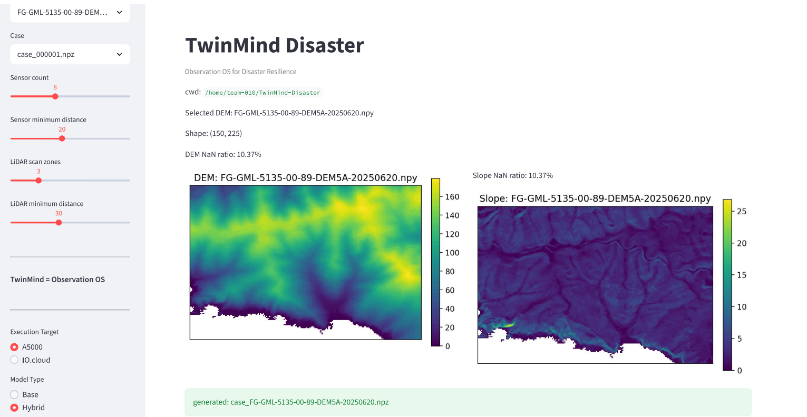

AI Digital Twin for Terrain-Aware Flood Prediction
TwinMind-Disaster continuously learns from terrain and sensor data to autonomously optimize observation networks—reducing uncertainty where it matters most.
Lightweight CNN predicts flood depth from terrain + rainfall inputs
Auxiliary temporal representation to improve structural stability
Uncertainty quantification via Monte Carlo inference for risk-aware decisions
AI selects next-best observation points to maximize information gain
Real-time visualization: terrain, flood risk, uncertainty, sensors

⚠️ Image not found. Please ensure assets/dashboard.png exists.'" />Streamlit-based interface showing DEM terrain, predicted flood depth, MC Dropout uncertainty maps, and AI-optimized sensor placements in real-time.
Results from terrain-aware flood prediction experiments on GSI DEM data
TwinMind aims to become a Reality Operating System for Earth observation—where AI continuously learns from terrain, climate, and sensor data to predict, simulate, and optimize real-world outcomes.
"Predicting water, protecting life."